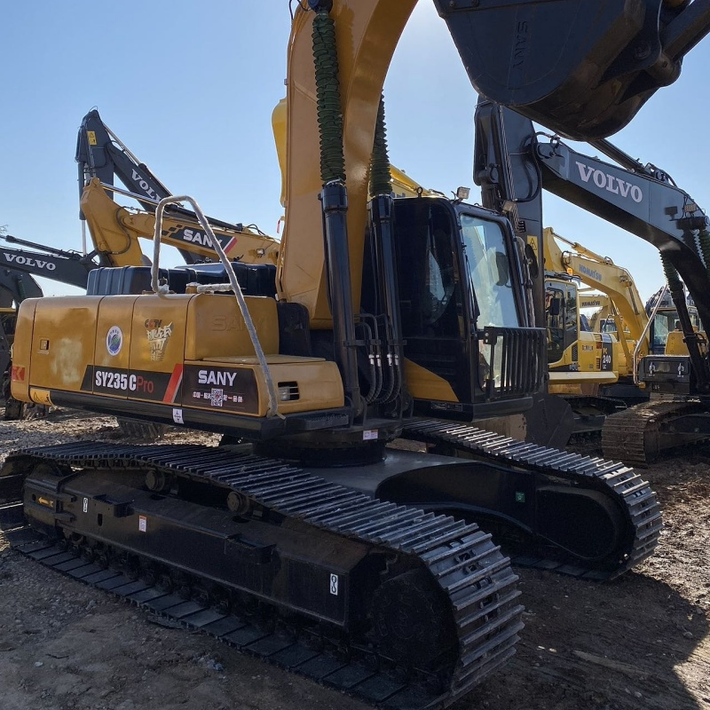

Refurbished SANY SY235 Excavator
The SY235 excavator was introduced by SANY Heavy Industry as part of its mid-weight lineup, designed to bridge the gap between the compact SY215 and the heavier-duty SY265. With an operating weight around 23.5 tons, the SY235 offers a balance of maneuverability, breakout force, and fuel efficiency—making it ideal for urban construction, foundation work, and moderate mining operations.
Honestly, it's almost impossible to buy a brand new excavator from China. They either don't exist or are made in China. If a Chinese seller tells you their Caterpillar/Komatsu/Volvo/Kobelco/Hitachi is brand new, they're lying. Therefore, a refurbished excavator is your best bet.

SANY, founded in 1989, became the world’s largest excavator manufacturer by unit volume in the early 2020s. The SY235 played a key role in this growth, especially in markets like Southeast Asia, the Middle East, and Latin America, where infrastructure expansion demanded reliable machines with low operating costs and easy maintenance.
Core Specifications of the Refurbished SY235
Refurbished SY235 units typically retain the original performance envelope, with key components restored or replaced. Common specifications include:
Operating Weight and Dimensions
- Operating Weight: 23,000–23,800 kg
- Overall Length: ~10.2 meters
- Overall Width: ~3.19 meters
- Overall Height: ~3.25 meters
- Ground Clearance: ~470 mm
- Tail Swing Radius: ~3.1 meters
- Track Width: 600 mm standard
Engine and Powertrain
- Engine Model: Cummins QSB6.7 or SANY-branded turbo diesel
- Rated Power Output: 173–180 hp (129–134 kW)
- Maximum Torque: ~850 Nm @ 1,500 rpm
- Fuel Tank Capacity: ~465 liters
- Gradeability: Up to 35°
- Travel Speed: 3.5–5.5 km/h
- Swing Speed: ~11 rpm
Hydraulic System
- Main Pump Type: Variable displacement axial piston pump
- Flow Rate: ~2 × 220 L/min
- System Pressure: Up to 34.3 MPa
- Hydraulic Oil Capacity: ~270 liters
- Boom Cylinder Bore: ~135 mm
- Arm Cylinder Bore: ~120 mm
- Bucket Cylinder Bore: ~110 mm
Performance Metrics
- Bucket Capacity: 1.0–1.2 m³
- Max Digging Depth: ~6.5 meters
- Max Reach (Horizontal): ~10.2 meters
- Max Dump Height: ~6.9 meters
- Bucket Digging Force: ~150 kN
- Arm Digging Force: ~120 kN
Cab and Operator Features
- Cab Type: ROPS/FOPS certified
- Display: LCD monitor with diagnostics and fuel tracking
- Controls: Ergonomic joysticks with customizable sensitivity
- Comfort: Air-conditioned cab, adjustable suspension seat
- Visibility: Panoramic glass with optional rear-view camera
Smart Features and Efficiency
- Eco Mode: Adaptive engine output for fuel savings
- Auto Idle: Reduces RPM during inactivity
- Centralized Lubrication: Optional for reduced maintenance
- Telematics Ready: Some refurbished units support remote diagnostics
Attachments Compatibility
- Standard Bucket: 1.0–1.2 m³ earth or rock bucket
- Optional Tools: Hydraulic breaker, grapple, compactor, ripper
- Quick Coupler: Hydraulic or manual options available
Refurbishment Scope
Refurbished SY235 units typically include:
- Engine overhaul (injectors, turbo, seals)
- Hydraulic pump recalibration or replacement
- Electrical system rewiring and sensor testing
- Cab restoration (seat, controls, HVAC)
- Structural repairs (boom welding, bushing replacement, repainting)
These specs make the SY235 suitable for trenching, foundation excavation, and moderate rock handling.
Refurbishment Scope and Quality Indicators
Refurbished SY235 excavators vary in quality depending on the supplier and original usage. A high-quality refurbishment typically includes:
- Engine Overhaul: Turbocharger cleaning, injector replacement, cylinder head inspection
- Hydraulic System Restoration: Pump recalibration, valve block testing, hose replacement
- Undercarriage Rebuild: Track link replacement, roller inspection, sprocket wear correction
- Cab Reconditioning: Seat replacement, joystick recalibration, monitor diagnostics
- Structural Repairs: Boom and arm crack welding, bushing replacement, repainting
Units with fewer than 2,000 operating hours and no history of major failure are often labeled “90% new.” Some suppliers offer test reports showing no oil leakage, stable hydraulic pressure, and full-function diagnostics.
Smart Features and Operator Comfort
Modern SY235 models—and well-refurbished units—include:
- Eco Mode: Reduces fuel consumption during light-duty operations
- Auto Idle: Automatically lowers engine RPM during inactivity
- Real-Time Monitoring: LCD display with fault codes, fuel usage, and maintenance alerts
- ROPS/FOPS Cab: Certified for rollover and falling object protection
- Ergonomic Layout: Adjustable seat, panoramic visibility, low vibration controls
These features contribute to reduced operator fatigue and improved jobsite productivity.
Attachments and Versatility
The SY235 supports a wide range of attachments:
- Standard Bucket: 1.0–1.2 m³ earth or rock bucket
- Hydraulic Breaker: For demolition and concrete removal
- Grapple: For forestry and scrap handling
- Compactor: For roadwork and trench stabilization
- Ripper: For hard soil and frozen ground
Quick coupler systems allow fast switching between tools, making the SY235 suitable for multi-role deployment.
Market Trends and Pricing
Refurbished SY235 excavators are widely available in China, especially in Shanghai, where dealers maintain inventories of thousands of units. Pricing typically ranges from ¥340,000 to ¥460,000 RMB ($47,000–$64,000 USD), depending on condition, attachments, and refurbishment level.
Buyers should verify:
- Operating Hours: Lower hours suggest less wear
- Component Authenticity: Original SANY or Cummins parts preferred
- Test Reports: Confirm hydraulic performance and engine health
- Warranty Terms: Some suppliers offer 3–6 month limited warranties
Field Story: A Comeback in the Andes
In 2023, a construction firm in Peru acquired a refurbished SY235C for a rural bridge foundation project. The machine had previously worked in a limestone quarry and was restored with a new hydraulic pump and rebuilt undercarriage. Over the next 1,400 hours, the excavator handled trenching, slope cutting, and boulder removal without major issues. The firm reported fuel savings of 8% compared to its older Doosan DX225 and praised the SY235’s stability on uneven terrain.
Recommendations for Buyers
- Inspect Before Purchase: Check engine, hydraulics, and undercarriage in person
- Request Maintenance Records: Even partial logs help assess prior usage
- Test Attachments: Ensure compatibility and performance
- Choose Reputable Suppliers: Prefer those with export licenses and transparent practices
- Consider Telematics: Some refurbished units support remote diagnostics
Conclusion
The refurbished SANY SY235 excavator offers a compelling mix of power, efficiency, and affordability. With proper inspection and sourcing, it can serve as a reliable workhorse across construction, mining, and infrastructure projects. For contractors seeking performance without the premium of a new unit, the SY235 stands as a smart investment with proven field results.
Our Commitment
- 2 years / 4000 hours warranty.
- EPA certified.
- No sweatshop labor.
Contacts

- [email protected]
- Youtube Instagram Facebook
- Navigation: G206 (Sishu Bridge) in Changfeng County, Hefei City, Anhui Province, 200 meters north to the east